Gus
THE NIGHT 23:40
Deck 7
Stern
701
702
NEW
Rosalind703
Martin
704
Vivian
Lounge
Theo
NEW
Lawyer
Where will you go?
- 1702Rosalind
- 2LoungeTheo / Lawyer
- 3703Martin
- 4701Gus
- 5704Vivian
- 6Stern deck
Free questions 3/3
Case File
↑↓Select
EnterGo
SpaceNext line
AAccuse
NEW
Accuse Rosalind?
You can't take this back.
If you're wrong, the culprit walks free.